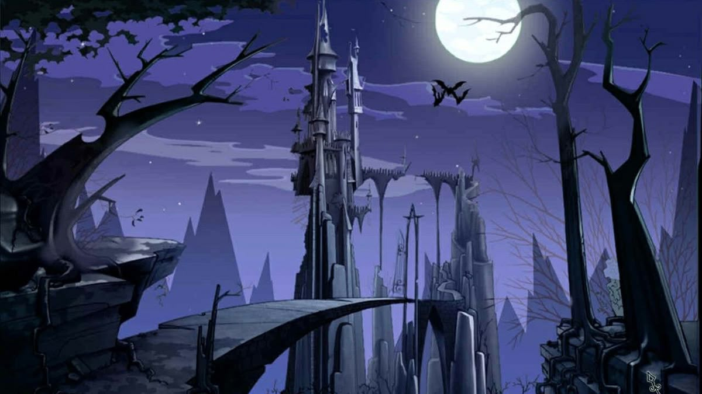
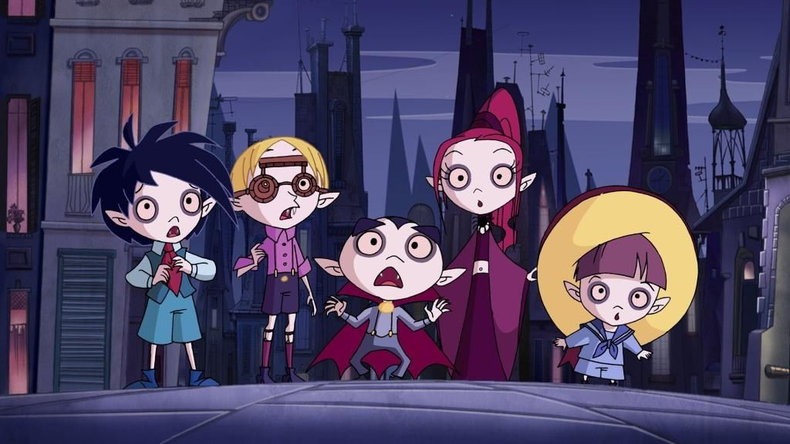
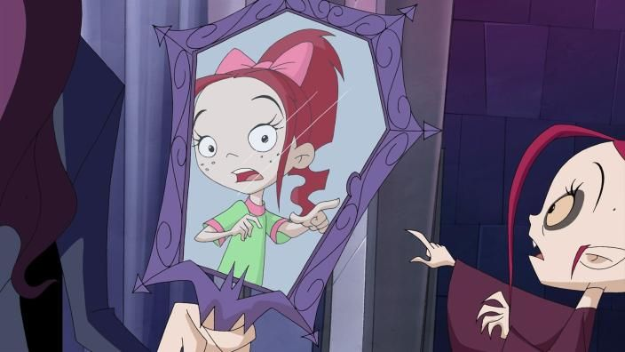
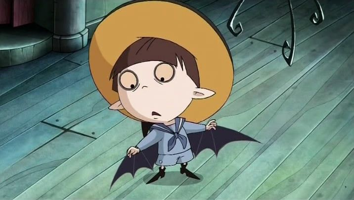
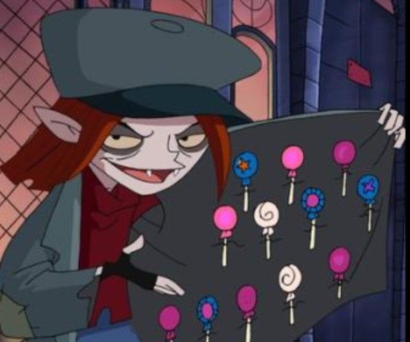
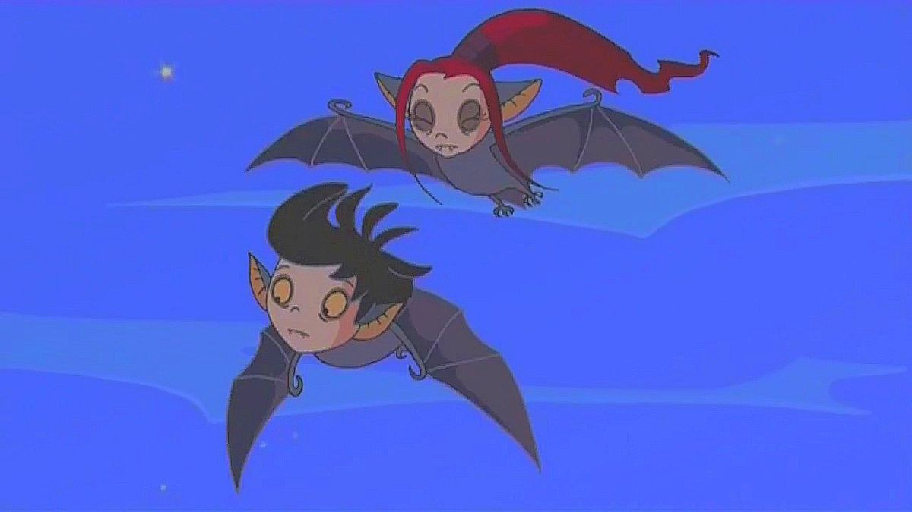
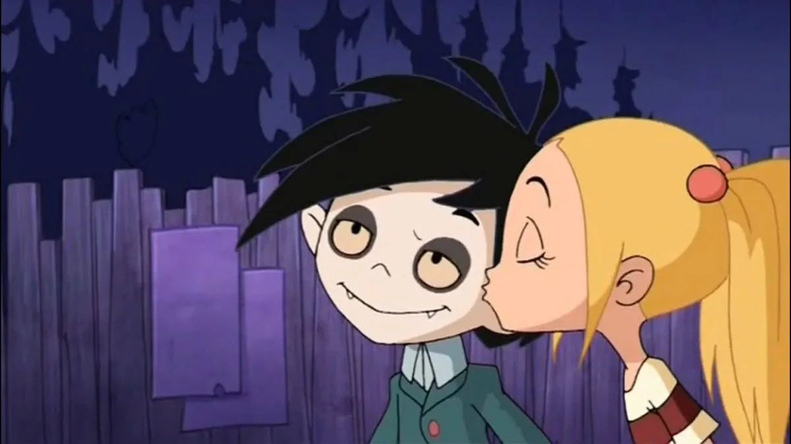
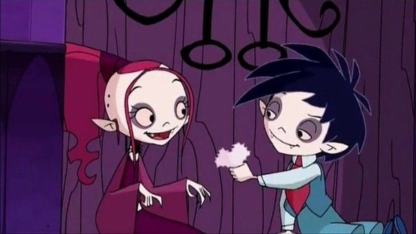
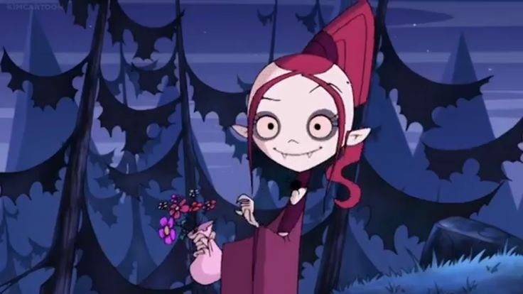

The School For Vampires


The School for Vampires
School for Vampires (German: Die Schule der kleinen Vampire, Italian: Scuola di vampiri) is a 2006 horror-comedy animated television series, based on the children's book Die Schule der kleinen Vampire by Jackie Niebisch in 1983.

Our Vampires are Different
A human that became a vampire (after being bitten by a vampire during a full moon) can become human again by replacing all his/her vampire blood with human blood in a blood trasfusion.

Also, a vampire that is exposed to sunlight does not die, but is instead reduced to a living/undead pile of ash that can still speak and retains the same personality.
Apparently, in this universe, there are vampires that are born as vampires and those who were turned by bite. Probably as a logic consequence, these vampires grow up and age. They are still immortal, though.

Blood is not a necessaty to the vampires, at least not the vampire children who are not allowed to drink blood until they graduate the school for vampires. They eat all kinds of non-blood food, the vampire children even love human sweets.

Other vampiric powers include hypnosis,bringing one's shadow to life and turning into bats (but retaining their human faces).

Romeo and Juliet? - Cartoon Main Ship
Oskar is best friends with Sunshine, going through many hardships because Sunshine's grandfather is a vampire hunter, Oskar has a crush on her. He's constantly concerned about Sunshine finding out he's a vampire, but he always makes time to see her, going on dates and even attending events such as her school dance. He protects Sunshine whenever she is in danger, and goes to long lengths to keep her safe. Trusting her with his problems, although hiding that they come from the fact that he's a vampire, they've shared many moments together throughout the series, although it is never clarified if they're a couple or if they only like each other.

Our Opinion
When I was watching it at first, I did not like the main ship at all... I have a better option: Gothetta and Oscar. While Oskar and Sunshine follow the Romeo and Juliet formula of two wordss colliding, I preffered Gothetta and Oskar because their bond is built on daily friendship, mutual support and complementary personalities rather than just the thrill of forbidden. I still can not handle that the sources describe Gothetta's feelings as unrequited.

Gothetta is Oskar's only female friend at his school, since she is the only female student. Gothetta has a crush on Oskar but the feeling is unrequited, and seems to be oblivious to Oskar, who only sees her as a best friend and who is in love with Sunshine Polidori instead. Despite this, the two are very close friends and they trust each other with almost all of their situations, and they are always there for each other. Gothetta shows a lot of jealousy when it comes to the relationship between Oskar and Sunshine, and rages on Oskar on how wrong it is for a vampire to be in love with a human; but despite this, she'll help him through all his troubles with her, saving him in multiple scenarios where he is in danger with Professor Polidori.